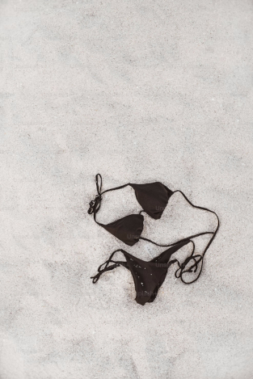
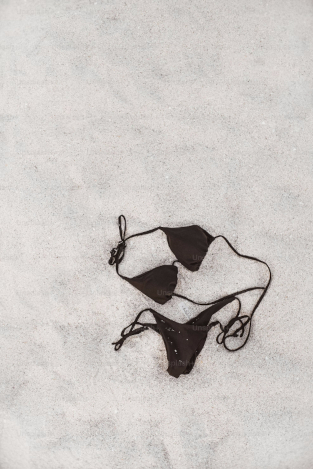

An Overview of Mountain Biking
Mountain bike racing takes place across a wide range of off–road environments. The sport is divided into several exciting disciplines, including cross–country, downhill, four–cross, and freeride — each offering its own unique challenges and thrills.
Cross–country races typically take place in parks, woodlands, and forestry areas. Courses are designed to test a rider's endurance and skill, often featuring a mix of climbs, descents, and technical elements. These looped circuits are purpose–built by expert designers and often include man–made features like rock gardens to ramp up the difficulty.
Downhill racing is all about speed and adrenaline. These shorter, point–to–point courses make the most of steep terrain and are packed with technical obstacles — think rocks, roots, jumps, and dramatic drop–offs. Many are custom–built for competitions, while others are part of permanent bike parks and trail centres.
Four–cross tracks are built for head–to–head action. Like downhill courses, they're laid out on steep terrain with man–made jumps and berms (banked corners), but they're much shorter — and wide enough for four riders to race side–by–side. It's fast, furious, and fiercely competitive.
Mountain biking isn't only about racing — it's about adventure. The UK's vast network of bridleways and public rights of way stretches for thousands of miles, offering endless routes for riders with a sense of exploration and an Ordnance Survey map in hand.
Prefer a more structured experience? Head to one of the many mountain bike trail centres across Britain. These purpose–built facilities offer clearly marked and graded trails — often set in scenic forestry areas — along with all the essentials: bike hire, cafes, shops, wash stations, and changing rooms. They're your one–stop destination for a full day of riding.


Mountain Biking

Cycling clubs and groups
Calling All Cycling Enthusiasts!
Whether you're an experienced rider chasing speed goals or a beginner just starting your cycling journey, the North York Moors has a vibrant and welcoming cycle club scene waiting for you. It's not just about spinning wheels — it's about sharing challenges, building friendships, and enjoying the simple pleasures of the ride… including the best local cafés and cake stops along the way!
Club Highlights Across the Region:
Active Filey
Offers a variety of cycling experiences led by qualified ride leaders and coaches. Regular weekly rides are available throughout the day (morning, afternoon, and evening), along with small events like time trials and sportives.
Breeze Rides
Free, women–only rides led by trained Breeze Champions. Perfect for beginners or experienced cyclists looking to improve their skills. Ride options vary, including Breeze into the Forest rides in Dalby Forest.
Cleveland Wheelers
Established in 1958, this club serves Middlesbrough, Cleveland, and North Yorkshire. It's a lively community attracting up to 50 riders for their weekly Sunday ride, which is split into ability–based groups.
FLAB Social Rides
Open to all abilities and completely free to join. With a "no one gets left behind" policy, these all–inclusive social rides are led by the supportive FLAB (Fat Lad At The Back) community, coordinated by local "Flampions".
Malton Wheelers
Primarily a road cycling club offering a Sunday morning ride at 9:00 AM, covering approximately 40–50 miles from Malton Market Place. Occasional summer evening time trials also take place.
MTB Guisborough Club
Focused on promoting mountain biking in the local area. Offers coaching and skill development sessions, along with a progression pathway for those aiming to race with the local MTB team.
Pickering Social Ride Group
An informal group hosting road, gravel, and mountain bike rides. Regular Tuesday evening and Sunday morning rides depart from Pickering.
Ryedale Velo Club
A friendly, all–abilities cycling club based in Kirkbymoorside. Offers multiple weekly rides including road, gravel, and mountain biking. Hosts summer time trials and weekend cycling trips. Affiliated with British Cycling.
Scarborough Coast Cycle Club
Formerly Richardson's Cycle Club. A committee–run club offering both mountain bike and road rides throughout the week in and around Scarborough.
Scarborough Paragon Cycling Club
Founded in 1953 and home to around 70 active members, this club has a rich history in road racing, time trials, and social riding. A great place to share knowledge and grow your cycling experience.
Whitby Wheelers CC
Founded in 1975 to promote and encourage both recreational and competitive cycling. Actively affiliated with British Cycling, the club continues to support cyclists of all levels.


Long journeys can be tiring...
...which is why our trip programme includes relaxing beach breaks — shed your layers, take a dip, soak up the sun, and enjoy some well–earned rest (clothing optional, if you like).
 
